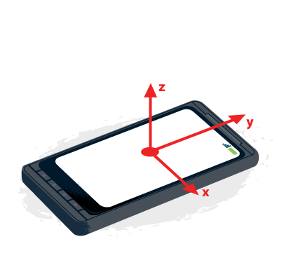

{{ Draft() }}
When using orientation and motion events, it's important to understand what the values you're given by the browser mean. This article provides details about the coordinate systems at play and how you use them.
A coordinate frame is a system whereby the orientation of the three axes (X, Y, and Z) are defined in reference to an object. There are two coordinate frames to consider when using orientation and motion events:
The Earth coordinate frame is the coordinate frame fixed on the center of the Earth; that is, the axes are aligned based on the pull of gravity and the standard magnetic north orientation. We use upper-case letters ("X", "Y", and "Z") to describe the axes of the Earth coordinate frame.
The device coordinate frame is the coordination frame fixed on the center of the device. We use lower-case letters ("x", "y", and "z") to describe the axes of the device coordinate frame.

orientationchange event.Rotation is described about any given axis in terms of the number of degrees of difference between the device's coordinate frame and the Earth coordinate frame, and is measured in degrees.
Rotation around the z axis -- that is, twisting the device -- causes the alpha rotation angle to change:
The alpha angle is 0° when top of the device is pointed directly toward the Earth's north pole, and increases as the device is rotated toward the left.
Rotation around the x axis -- that is, tipping the device away from or toward the user -- causes the beta rotation angle to change:

The beta angle is 0° when the device's top and bottom are the same distance from the Earth's surface; it increases toward 180° as the device is tipped forward toward the user, and it decreases toward -180° as the device is tipped backward away from the user.
Rotation around the y axis -- that is, tilting the device toward the left or right -- causes the gamma rotation angle to change:

The gamma angle is 0° when the device's left and right sides are the same distance from the surface of the Earth, and increases toward 90° as the device is tipped toward the right, and toward -90° as the device is tipped toward the left.